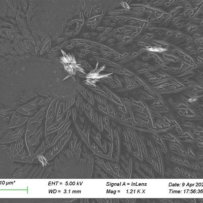

小虚空🍥
@tokerumaisurii
@AlexSmader55558 @xushehua @JyushitiYizuka 图片置底都来了，请问你了，按一下鼠标让图置底容易，其上的文字全部要相应做合适的反色/变色以保证可读性不容易，你愿意花那份心思吗，还是抱着“哦反正我做得够‘丰富’了，剩下的人体工学问题都不是我的问题”的心态呢？

Just a Potato
@AlexSmader55558
Just a Potato
@AlexSmader55558
@xushehua @JyushitiYizuka 找个图片置于底层也比空白好 实在不行ai问一下也能给几种方法 说实话这是真不用心 现在想学方法太多了又不是什么特殊领域没人做过🐳